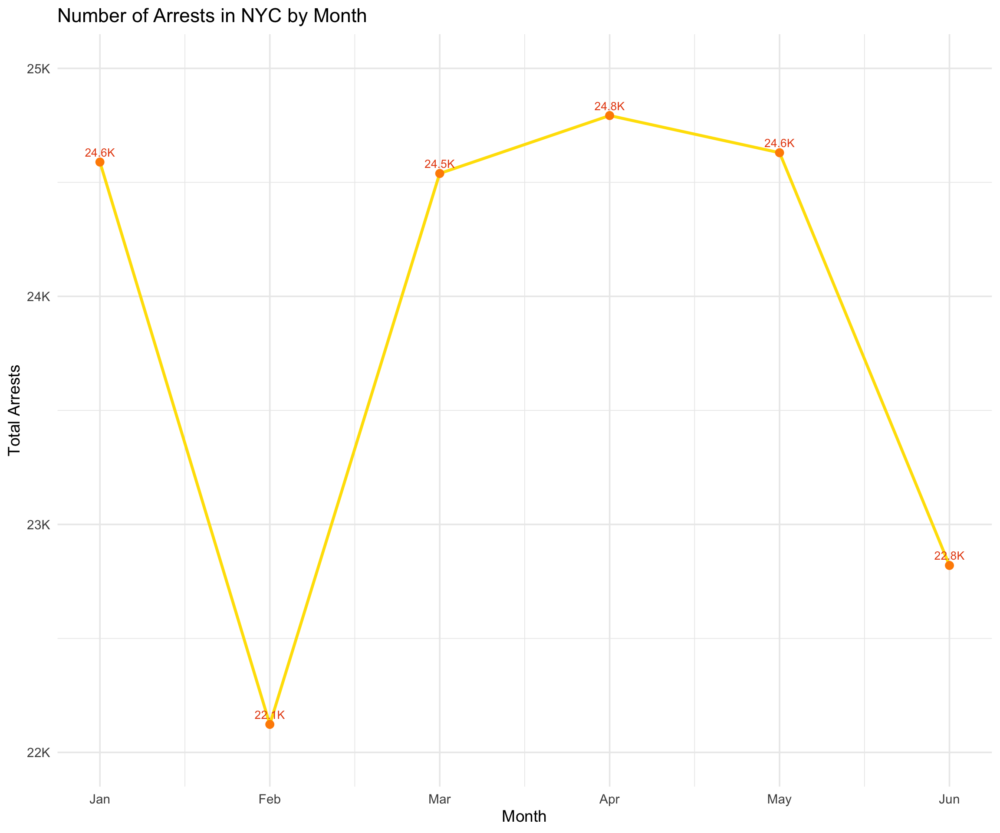
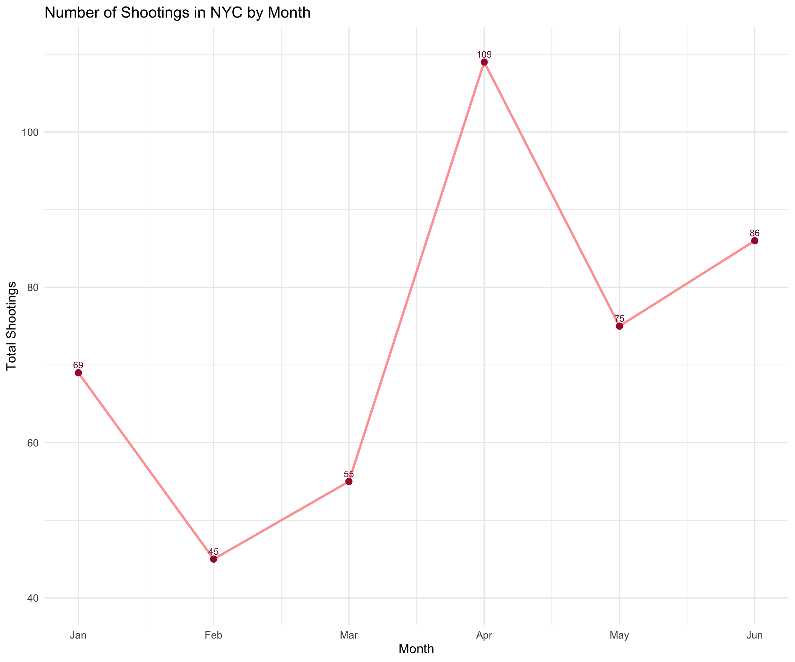
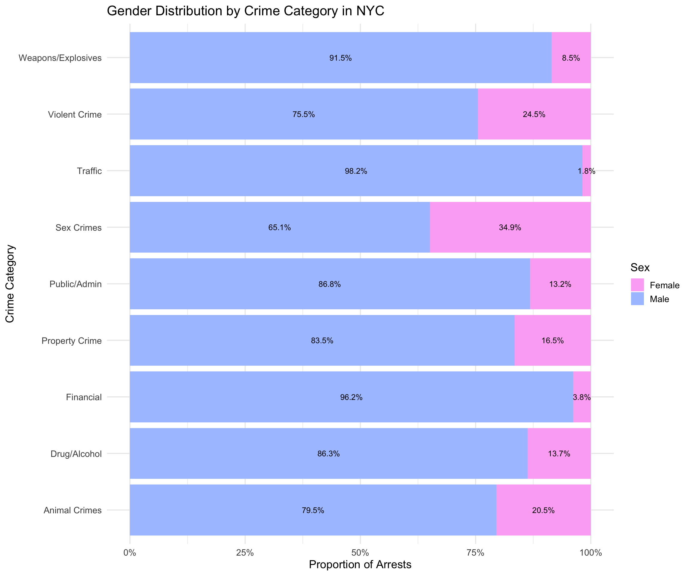
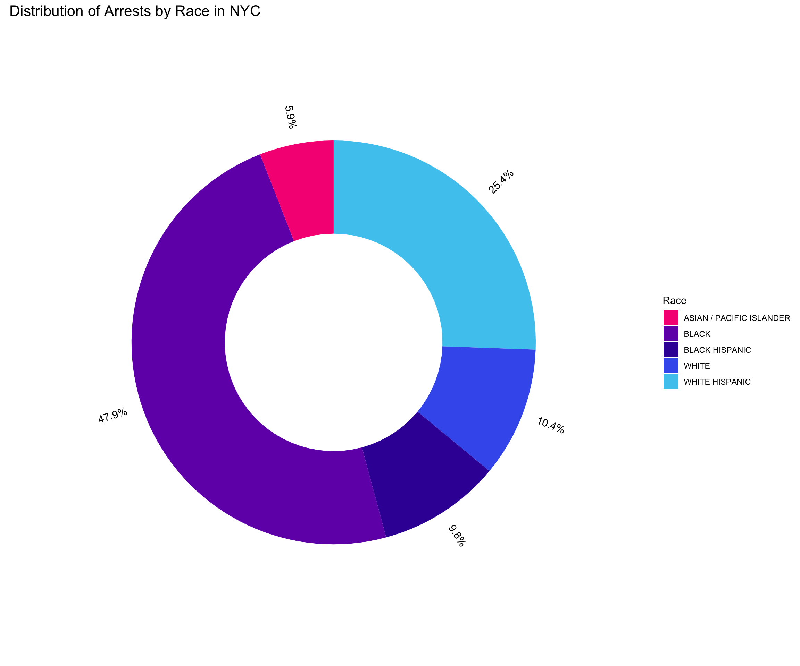
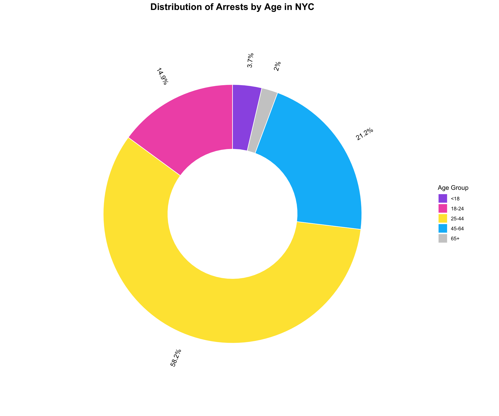
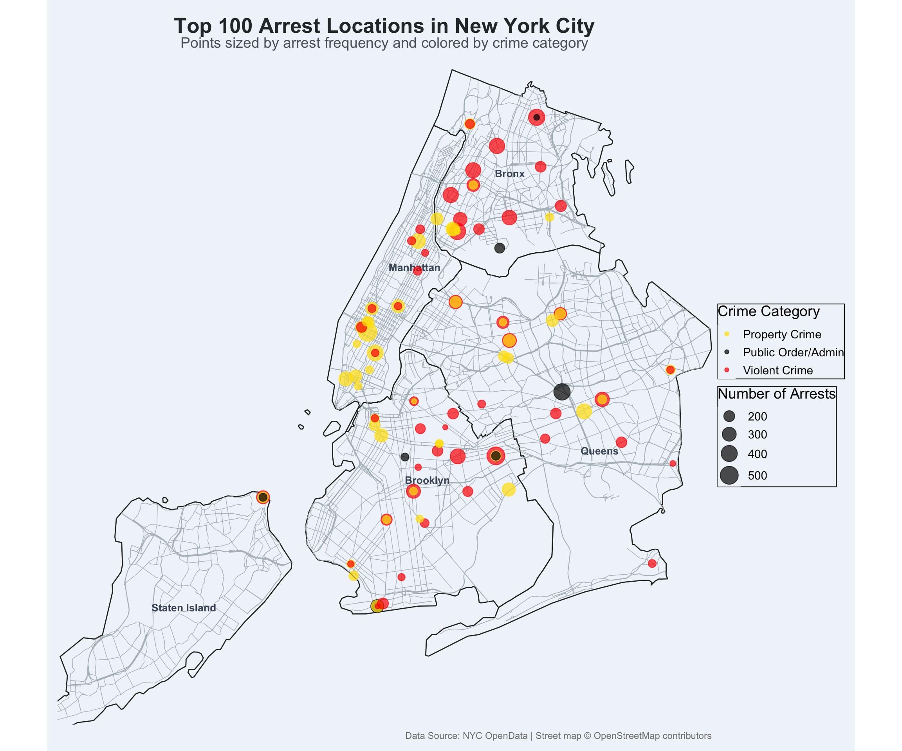
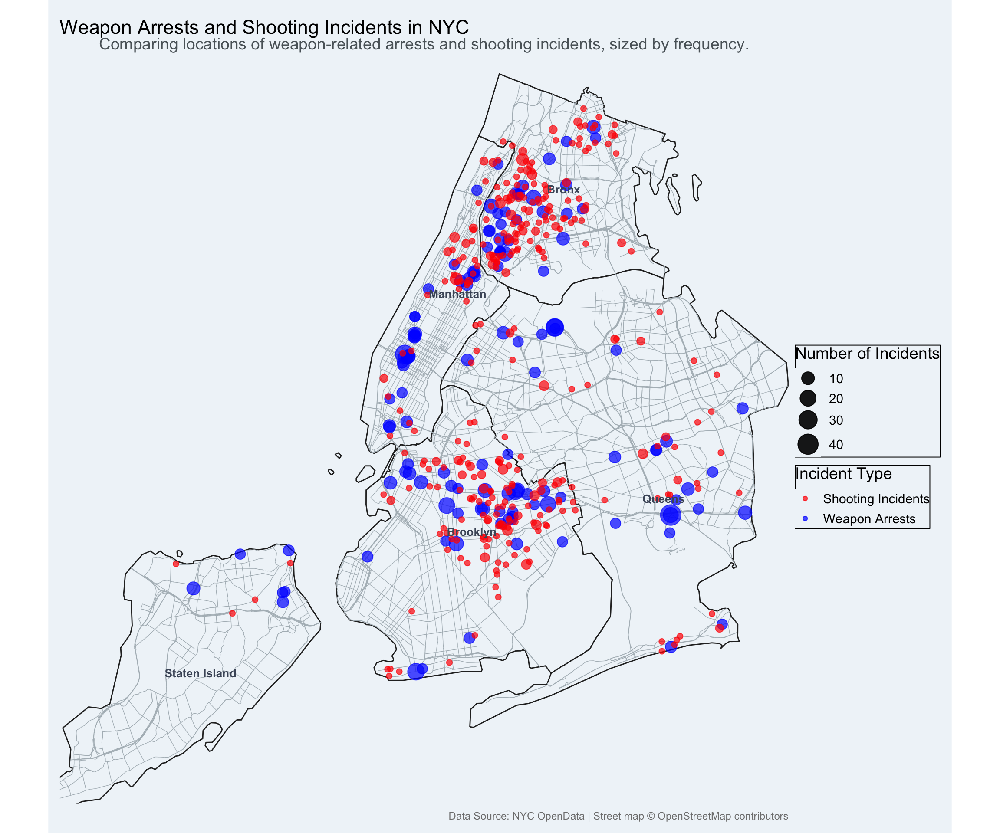

if (!require(pacman)) install.packages("pacman")
# Load all required packages for the entire project
pacman::p_load(
tidyverse, rvest, janitor, ggrepel, jsonlite, httr2,
treemapify, plotly, viridis, lubridate, tigris, sf,
gganimate, osmdata, arrow, duckdb, DBI, here, knitr, skimr,
ggplot2, dplyr, knitr, scales
)Geospatial Analysis of NYC Crime
Introduction
Role devision:
- Tanya Mazko - pre-proccesing the data, data-manipulation, creating
reg-expresions. - Alona Nazarenko - data visualization.
- Tymofii Muraviov - final
quartofile andcanvapresentation.
During this project we explored geospatial analysis using R as main language with it’s powerfull libraries to help in optimal solution. We are gonna investigate NYC arrests’, shootings’ data to find potential patterns as well as crime hotspots and proove or refute some hypothesis.
The data from NYC Open Data will be pre-proccesed from .csv to .parquet for optimized workflow.
Our main questions are:
- What are the top 100 crime hotspots in NYC, and what are the dominant crime types at these locations?
- Is there a spatial relationship between the locations of weapon-related arrests and the locations of reported shooting incidents?
- Is there a clear demografic profile of person who is more likely to do illegal stuff and if yes how does it look?
Setup
First, I’ll load all the necessary packages for this analysis. Using pacman helps manage loading and, if necessary, installing all packages at once. This includes tidyverse for general manipulation, arrow for reading Parquet files, and the sf, tigris, and osmdata stack for geospatial work.
Data import
We downloaded .csv files from NYC OpenData:
- NYPD arrest data as it is: up to date(July 15, 2025), 143K rows(interesting), has latitude and longitude info(data-viz will be accurate).
- NYPD shooting incident data as it is: same as previous data-set but looks from a different perspective so we can do interesting conclusions.
- Issued licenses as it: has latitude and longitude info + we can try to find connections between the category the building is assigned to and the likelihood of arrests/shootings happening there.
Pre-processing
Overview of steps:
- Connection to
duckdb. - Reading data from our
.csvfiles. - Saving the data to
.parquetfiles. - Disconnecting from
duckdb.
Show code
con <- dbConnect(duckdb::duckdb())
#------arrests data to parquet
dbExecute(con, "
CREATE TABLE arrests AS
SELECT * FROM read_csv_auto('data/arrest_data.csv');
")
dbExecute(con, "
COPY arrests TO 'data/arrest_data.parquet' (FORMAT 'parquet');
")
#------licenses data to parquet
dbExecute(con, "
CREATE TABLE licenses AS
SELECT * FROM read_csv_auto(
'data/licenses.csv',
delim = ',',
header = true,
quote = '\"',
ignore_errors = true,
all_varchar = true
);
")
dbExecute(con, "
COPY licenses TO 'data/licenses.parquet' (FORMAT 'parquet');
")
#------shooting data to parquet
dbExecute(con, "
CREATE TABLE shooting AS
SELECT * FROM read_csv_auto('data/shooting.csv');
")
dbExecute(con, "
COPY shooting TO 'data/shooting.parquet' (FORMAT 'parquet');
")
# Disconnect from DuckDB
dbDisconnect(con, shutdown = TRUE)
#------------------------------------------------------------
# Read the created parquet files into R objects
arrests <- arrow::read_parquet("data/arrest_data.parquet") |>
clean_names()
licenses <- arrow::read_parquet("data/licenses.parquet") |>
clean_names()
# You'll probably want to load the shooting data too:
shooting <- arrow::read_parquet("data/shooting.parquet") |>
clean_names()Creation of the reg-expresions with 2 intentions:
- To devide
crimesinto categories. - To devide
buildingsinto categories.
Show code
crime_category <- function(crime) {
case_when(
str_detect(crime, regex("ASSAULT|ROBBERY|HOMICIDE|RAPE|SEXUAL|KIDNAPPING|ENDANGERMENT|MENACING|STRANGULATION|OBSTR BREATH/CIRCUL|AGGRAVATED HARASSMENT|MAKING TERRORISTIC THREAT|FORCIBLE TOUCHING|MURDER|COERCION|SODOMY|STALKING", ignore_case=TRUE)) ~ "Violent Crime",
str_detect(crime, regex("BURGLARY|LARCENY|THEFT|FORGERY|FRAUD|ARSON|MISCHIEF|GRAFFITI|STOLEN PROPERTY|UNAUTHORIZED USE VEHICLE|BURGLARS TOOLS", ignore_case=TRUE)) ~ "Property Crime",
str_detect(crime, regex("CONTROLLED|DRUG|CANNABIS|ALCOHOL|IMPAIRED|MARIJUANA|POSS METH|SYNTHETIC", ignore_case=TRUE)) ~ "Drug/Alcohol",
str_detect(crime, regex("WEAPON|FIREWORKS|EXPLOSIVE|CRIM POS WEAP|FIREARMS", ignore_case=TRUE)) ~ "Weapons/Explosives",
str_detect(crime, regex("TRESPASS|DISORDERLY|LOITERING|TRAFFIC|BRIBERY|PUBLIC|CODE|HEALTH|BAIL JUMPING|ESCAPE|IMPRISONMENT|CONTEMPT|NUISANCE|OBSCENITY|FUGITIVE|UNLICENSED OPERATOR|RADIO DEVICES|APPEARANCE TICKET|GENERAL BUSINESS LAW|NY STATE LAWS|NYS|NYC UNCLASSIFIED", ignore_case=TRUE)) ~ "Public Order/Admin",
str_detect(crime, regex("PROSTITUTION|PATRONIZING|PROMOTING|LICENSED PREMISES|COMPULSORY|SEX CRIMES|INCEST|LURING A CHILD", ignore_case=TRUE)) ~ "Sex Crimes",
str_detect(crime, regex("ANIMAL|TORTURE/INJURE|NEGLECT/POISON|CONFINING ANIMAL|CAUSE SPI/KILL|ABANDON ANIMAL", ignore_case=TRUE)) ~ "Animal Crimes",
str_detect(crime, regex("RECKLESS DRIVING|SPEEDING|FAIL TO SIGNAL|SEAT BELTS|IMPROPER LIGHTS|ONE WAY STREET", ignore_case=TRUE)) ~ "Traffic",
str_detect(crime, regex("MONEY LAUNDERING|SALE|SALES OF PRESCRIPTION|UNAUTH. SALE", ignore_case=TRUE)) ~ "Financial/White Collar",
TRUE ~ "Other"
)
}
regex_drink <- "\\b(pub|bar|tavern|liquor|brewery|alcohol)\\b"
regex_leisure <- "\\b(spa|salon|massage|cinema|theater|club|recreation)\\b"
regex_family <- "\\b(family|child|children|kids|home|parent|baby)\\b"
regex_edu_work <- "\\b(school|college|university|academy|training|business|office)\\b"
excluded_leisure <- "Car Wash|Electronics Store|Secondhand Dealer|Home Improvement Contractor|Pawnbroker|Debt Collection Agency|Tobacco Retail Dealer"
excluded_drink_regex <- "Locksmith|Contractor|Tow|Secondhand|Car Wash|Garage|Hotel|Employment|Electronics|Guide|Vendor|Pawnbroker|Bingo|Delivery|Storage|Laundry|Games|Cab"
excluded_edu_work <- "Garage|Parking|Tobacco|Stoop|Secondhand|Electronic|Dealer"
licenses_cleaned <- licenses |>
mutate(
text_search = paste(business_name, business_category, dba_trade_name, sep = " "),
category = case_when(
str_detect(text_search, regex(regex_drink, ignore_case = TRUE)) &
!str_detect(business_category, regex(excluded_drink_regex, ignore_case = TRUE)) ~ "Drink",
str_detect(text_search, regex(regex_leisure, ignore_case = TRUE)) &
!str_detect(business_category, regex(excluded_leisure, ignore_case = TRUE)) ~ "Leisure",
str_detect(text_search, regex(regex_family, ignore_case = TRUE)) ~ "Family",
str_detect(text_search, regex(regex_edu_work, ignore_case = TRUE))&
!str_detect(business_category, regex(excluded_edu_work, ignore_case = TRUE)) ~ "Education/Work",
TRUE ~ "Other"
)
)
table(licenses_cleaned$category)Sumup of the categories we have:
Show code
arrests_summary <- arrests |>
mutate(category = crime_category(pd_desc)) |>
group_by(category) |>
summarise(count = n()) |>
arrange(desc(count)) # Sorts the table
# Print the arrests table
kable(arrests_summary,
caption = "Summary of Arrests by Crime Category",
col.names = c("Crime Category", "Total Count"))| Crime Category | Total Count |
|---|---|
| Property Crime | 43515 |
| Violent Crime | 42757 |
| Public Order/Admin | 28591 |
| Drug/Alcohol | 13898 |
| Other | 8296 |
| Weapons/Explosives | 5360 |
| Sex Crimes | 621 |
| Financial/White Collar | 261 |
| Traffic | 112 |
| Animal Crimes | 83 |
Show code
licenses_summary <- licenses_cleaned |>
group_by(category) |>
summarise(count = n()) |>
arrange(desc(count)) # Sorts the table
# Print the licenses table
kable(licenses_summary,
caption = "Summary of Licenses by Category",
col.names = c("License Category", "Total Count"))| License Category | Total Count |
|---|---|
| Other | 46420 |
| Family | 19761 |
| Education/Work | 435 |
| Leisure | 28 |
| Drink | 25 |
Geospatial data
Description of operations:
- The shape of 5 polygons, which together create NYC, has been fetched.
- Bounding-box was created.
- Downloaded the info for major streets.
- Cleaned and combined the data.
- The data was saved to .rds files and flag
cachehas been set to: true. We did this to optimise render of quarto file - not to wait for the download each time.
Show code
# cache: true
#| message: false
#| warning: false
# we are running this code once straight in the concole. then using the .rbs files not to wait for the download each time
# nyc_boroughs <- counties(state = "NY", cb = TRUE)|>
# filter(NAME %in% c("New York", "Kings", "Queens", "Bronx", "Richmond")) |>
# mutate(
# borough_name = case_when(
# NAME == "New York" ~ "Manhattan",
# NAME == "Kings" ~ "Brooklyn",
# NAME == "Richmond" ~ "Staten Island",
# TRUE ~ NAME
# )
# )
# nyc_bbox <- c(xmin = -74.259, ymin = 40.477, xmax = -73.700, ymax = 40.917)
# nyc_streets <- opq(bbox = nyc_bbox) |>
# add_osm_feature(
# key = "highway",
# value = c("motorway", "trunk", "primary", "secondary", "tertiary")
# ) |>
# osmdata_sf()
# nyc_streets_lines <- nyc_streets$osm_lines |>
# st_transform(st_crs(nyc_boroughs))
# nyc_boroughs_transformed <- st_transform(nyc_boroughs, st_crs(nyc_streets$osm_lines))
# nyc_streets_clipped <- st_intersection(nyc_streets$osm_lines, nyc_boroughs_transformed)
# saveRDS(nyc_boroughs_transformed, "data/nyc_boroughs.rds")
# saveRDS(nyc_streets_clipped_processed, "data/nyc_streets.rds")
nyc_boroughs_transformed <- readRDS("data/nyc_boroughs.rds")
nyc_streets_clipped <- readRDS("data/nyc_streets.rds")Visualiazations and Insights
The “When” and “Who” of NYC Crime
Show code
arrests |> # improved glimpse version via a proposition from chat
collect() |>
slice_sample(n = 5) |>
kable()| arrest_key | arrest_date | pd_cd | pd_desc | ky_cd | ofns_desc | law_code | law_cat_cd | arrest_boro | arrest_precinct | jurisdiction_code | age_group | perp_sex | perp_race | x_coord_cd | y_coord_cd | latitude | longitude | new_georeferenced_column |
|---|---|---|---|---|---|---|---|---|---|---|---|---|---|---|---|---|---|---|
| 303738689 | 2025-03-27 | 515 | CONTROLLED SUBSTANCE,SALE 3 | 117 | DANGEROUS DRUGS | PL 2203901 | F | M | 25 | 0 | 25-44 | M | BLACK HISPANIC | 1000581 | 231070 | 40.80090 | -73.94101 | POINT (-73.941012 40.800904) |
| 308448317 | 2025-06-21 | 968 | UNLICENSED OPERATOR | 880 | MOVING INFRACTIONS | VTL05110E5 | F | B | 47 | 0 | 45-64 | F | BLACK | 1024381 | 265139 | 40.89433 | -73.85485 | POINT (-73.85484629 40.89432779) |
| 298939045 | 2025-01-05 | 101 | ASSAULT 3 | 344 | ASSAULT 3 & RELATED OFFENSES | PL 1200001 | M | K | 81 | 0 | 25-44 | M | BLACK | 1005312 | 190540 | 40.68965 | -73.92405 | POINT (-73.924053 40.689649) |
| 301070994 | 2025-02-14 | 705 | FORGERY,ETC.-MISD. | 358 | OFFENSES INVOLVING FRAUD | PL 1702000 | M | M | 18 | 0 | 25-44 | M | WHITE HISPANIC | 986871 | 216638 | 40.76131 | -73.99054 | POINT (-73.990539 40.761308) |
| 300230188 | 2025-01-29 | 268 | CRIMINAL MIS 2 & 3 | 121 | CRIMINAL MISCHIEF & RELATED OF | PL 1450502 | F | M | 32 | 0 | 25-44 | M | WHITE HISPANIC | 999439 | 236537 | 40.81591 | -73.94512 | POINT (-73.945124 40.815913) |
Show code
arrests <- arrests |>
mutate(arrest_date = as.Date(arrest_date)) |>
mutate(month = month(arrest_date))
monthly_arrests <- arrests |>
group_by(month) |>
summarise(total_arrests = n())
ggplot(monthly_arrests, aes(x = month, y = total_arrests)) +
geom_line(color = "#ffe000", linewidth = 1.2) +
geom_point(size = 3, color = "darkorange") +
scale_x_continuous(breaks = 1:12, labels = month.abb) +
scale_y_continuous( limits = c(22000, 25000),
labels = label_number(scale_cut = cut_short_scale())) +
labs(
title = "Number of Arrests in NYC by Month",
x = "Month",
y = "Total Arrests"
) +
geom_text(
aes(label = label_number(scale_cut = cut_short_scale(), accuracy = 0.1)(total_arrests)), # новий спосіб
vjust = -0.7,
size = 3.5,
color = "#e74d11"
) +
theme_minimal(base_size = 14)
Show code
shooting |> # improved glimpse version via a proposition from chat
collect() |>
slice_sample(n = 10) |>
kable()| incident_key | occur_date | occur_time | boro | loc_of_occur_desc | precinct | jurisdiction_code | loc_classfctn_desc | location_desc | statistical_murder_flag | perp_age_group | perp_sex | perp_race | vic_age_group | vic_sex | vic_race | x_coord_cd | y_coord_cd | latitude | longitude | new_georeferenced_column |
|---|---|---|---|---|---|---|---|---|---|---|---|---|---|---|---|---|---|---|---|---|
| 308800535 | 2025-06-28 | 15:53:00 | BRONX | OUTSIDE | 44 | 0 | STREET | (null) | N | (null) | (null) | (null) | 25-44 | M | WHITE HISPANIC | 1,008,787 | 247,061 | 40.84478 | -73.91132 | POINT (-73.911317 40.844776) |
| 303829750 | 2025-03-28 | 23:50:00 | MANHATTAN | OUTSIDE | 32 | 2 | HOUSING | MULTI DWELL - APT BUILD | N | 18-24 | M | BLACK | 25-44 | M | BLACK | 999,874 | 238,251 | 40.82061 | -73.94355 | POINT (-73.94355 40.820614) |
| 304789869 | 2025-04-15 | 11:00:00 | BRONX | OUTSIDE | 50 | 0 | STREET | (null) | N | 18-24 | M | BLACK | 18-24 | M | BLACK | 1,011,732 | 257,490 | 40.87339 | -73.90063 | POINT (-73.900629 40.873392) |
| 304199342 | 2025-04-04 | 14:29:00 | MANHATTAN | OUTSIDE | 34 | 0 | STREET | (null) | N | <18 | M | BLACK | 18-24 | M | BLACK HISPANIC | 1,005,517 | 255,164 | 40.86702 | -73.92311 | POINT (-73.92310894 40.86701515) |
| 308096531 | 2025-06-15 | 04:45:00 | BRONX | OUTSIDE | 52 | 0 | STREET | (null) | N | (null) | (null) | (null) | 18-24 | M | WHITE HISPANIC | 1,018,056 | 262,031 | 40.88583 | -73.87774 | POINT (-73.877738 40.885834) |
| 301565779 | 2025-02-23 | 23:41:00 | BRONX | INSIDE | 43 | 0 | DWELLING | MULTI DWELL - APT BUILD | N | <18 | M | BLACK | 45-64 | F | WHITE HISPANIC | 1,024,656 | 245,412 | 40.84019 | -73.85397 | POINT (-73.85397 40.840191) |
| 305034043 | 2025-04-20 | 01:57:00 | BROOKLYN | OUTSIDE | 81 | 2 | HOUSING | MULTI DWELL - PUBLIC HOUS | N | (null) | (null) | (null) | 18-24 | F | BLACK | 1,003,207 | 190,085 | 40.68841 | -73.93164 | POINT (-73.931642 40.688406) |
| 307645264 | 2025-06-05 | 21:55:00 | BRONX | OUTSIDE | 42 | 2 | HOUSING | MULTI DWELL - PUBLIC HOUS | N | (null) | (null) | (null) | <18 | M | BLACK HISPANIC | 1,010,650 | 240,263 | 40.82611 | -73.90461 | POINT (-73.904608 40.826112) |
| 302818234 | 2025-03-14 | 16:24:00 | MANHATTAN | OUTSIDE | 32 | 0 | STREET | (null) | N | 18-24 | M | BLACK | <18 | M | BLACK | 1,001,420 | 241,474 | 40.82946 | -73.93796 | POINT (-73.937956 40.829459) |
| 308763150 | 2025-06-28 | 03:53:00 | BROOKLYN | OUTSIDE | 67 | 0 | STREET | (null) | N | (null) | (null) | (null) | 18-24 | M | BLACK | 1,006,699 | 179,366 | 40.65897 | -73.91909 | POINT (-73.91908854 40.65896644) |
Show code
shooting <- shooting |>
mutate(occur_date = as.Date(occur_date)) |>
mutate(month = month(occur_date))
monthly_shooting <- shooting |>
group_by(month) |>
summarise(total_shootings = n())
ggplot(monthly_shooting, aes(x = month, y = total_shootings)) +
geom_line(color = "#ffa3a3", linewidth = 1.2) +
geom_point(size = 3, color = "#a71b37") +
scale_x_continuous(breaks = 1:12, labels = month.abb) +
scale_y_continuous(limits = c(40, 110),
labels = label_number(scale_cut = cut_short_scale())) +
labs(
title = "Number of Shootings in NYC by Month",
x = "Month",
y = "Total Shootings" ) +
geom_text(
aes(label = as.integer(total_shootings)),
vjust = -0.7,
size = 3.5,
color = "#721536",
) +
theme_minimal(base_size = 14)
Interpretation of the fact that both arrests and shootings when up in April: this looks like a seasonal event, as in the month of February we see the biggest dip. Peaking with 24.5K shootings and 108 arrests we can take stock that spring weather may be the most suitable for this “type of activities”, even better then warm summer. Potentially this is due to worse visibility due to fog, rain(the relation of arrests in March and May show dramatically less arrests even though the number of shootings stays almost at the highest point.)
Gender
Show code
arrests <- arrests |>
mutate( category = crime_category(pd_desc)) # for the visualiations that follow
gb_sex_category <- arrests |>
filter(category != "Other") |>
group_by(category, perp_sex) |>
summarise(n = n(), .groups = "drop") |>
group_by(category) |>
mutate(percent = 100 * n / sum(n))
gb_sex_category |>
mutate(category = recode(category,
"Financial/White Collar" = "Financial",
"Public Order/Admin" = "Public/Admin",
.default = category))|>
mutate(perp_sex = recode(perp_sex, "M" = "Male", "F" = "Female")) |>
ggplot(aes(
x = reorder(category, -percent),
y = percent,
fill = perp_sex
)) +
geom_col(position = "fill") +
coord_flip() +
scale_y_continuous(labels = percent_format()) +
scale_fill_manual(values = c("Male" = "#abc4ff", "Female" = "#fcb0f3")) +
labs(
title = "Gender Distribution by Crime Category in NYC",
x = "Crime Category",
y = "Proportion of Arrests",
fill = "Sex"
) +
geom_text(
aes(
label = paste0(round(percent, 1), "%"),
group = perp_sex
),
position = position_fill(vjust = 0.5),
color = "black",
size = 3.5
) +
theme_minimal(base_size = 14)
Race
Show code
my_colors <- c(
"#f72585",
"#7209b7",
"#3a0ca3",
"#4361ee",
"#4cc9f0"
)
race_data <- arrests |>
filter(!is.na(perp_race)) |>
group_by(perp_race) |>
summarise(n = n(), .groups = "drop") |>
mutate(
percent = n / sum(n) * 100
)
race_data <- race_data |>
filter(perp_race!="UNKNOWN" & perp_race!="AMERICAN INDIAN/ALASKAN NATIVE")|>
arrange(desc(perp_race)) |>
mutate(
ypos = cumsum(percent) - percent / 2,
angle = 90 - 360 * ypos / sum(percent)
)
ggplot(race_data, aes(x = 2, y = percent, fill = perp_race)) +
geom_col() +
coord_polar(theta = "y") +
xlim(0.5, 3) +
geom_text(aes(
x = 2.6,
y = ypos,
label = paste0(round(percent, 1), "%"),
angle = ifelse(angle < -90, angle + 180, angle),
hjust = ifelse(angle < -90, 1, 0)
), size = 4) +
scale_fill_manual(values = my_colors) +
theme_void() +
labs(
title = "Distribution of Arrests by Race in NYC",
fill = "Race"
) +
theme(
plot.title = element_text(size = 16)
)
Age
Show code
age_data <- arrests |>
filter(!is.na(age_group)) |>
group_by(age_group) |>
summarise(n = n(), .groups = "drop") |>
mutate(
percent = n / sum(n) * 100,
label = paste0(round(percent, 1), "%")
) |>
arrange(desc(age_group)) |>
mutate(
ypos = cumsum(percent) - percent / 2,
angle = 90 - 360 * ypos / sum(percent)
)
age_colors <- c(
"<18" = "#9b5de5",
"18-24" = "#f15bb5",
"25-44" = "#fee440",
"45-64" = "#00bbf9",
"65+" = "#cccccc"
)
age_data <- age_data %>%
arrange(desc(age_group)) %>%
mutate(
ymax = cumsum(percent),
ymin = c(0, head(ymax, n = -1)),
label_pos = (ymax + ymin) / 2,
angle = 90 - 360 * label_pos / sum(percent)
)
ggplot(age_data, aes(ymax = ymax, ymin = ymin, xmax = 4, xmin = 2, fill = age_group)) +
geom_rect(color = "white") +
coord_polar(theta = "y") +
xlim(c(0, 5)) +
geom_text(
aes(x = 4.78, y = label_pos, label = paste0(round(percent, 1), "%"),
angle = ifelse(angle < -90, angle + 180, angle)),
size = 4,
) +
scale_fill_manual(values = age_colors) +
theme_void() +
labs(
title = "Distribution of Arrests by Age in NYC",
fill = "Age Group"
) +
theme(
plot.title = element_text(size = 16, face = "bold", hjust = 0.5)
)
Interpretation: we do have a clear demografic profile.
- By gender: arrests are dominated by male species crossing 90% mark and achieving an astonishing 91.5% - 96.2%(for weopons used/financial categories).
- By age: more then half of the arrested people are aged 25-44 with following groups of 45-64 and 18-24. Concluding from this we might say that an age has some strong correlation. The fitter you are the higher the chance of having a wrong thoght and braking a law.
- By race: data shows 47.9% of arrests are connected to black and 25.4 to black hispanic. This may be influenced by their worse starting point(not having a roof over their head, worrying about what to eat the next day). But nothingcan justify unhealthy decisions. There fore it might be a good idea to be extra cousines dealing with those groups of people not to loose personal items.
The “Where” — A Geospatial Analysis
We agregated the data by location and category, then filtered for the 100 locations, which have the most arrests. This shows the spots where city potentially has problems either with security or does have very high amounts of important/pricy stuff. Therefore, you should be attentive espesially in them if you go for a walk to reset your mind.
Show code
arrests <- arrests |>
mutate( category = crime_category(pd_desc)) # for the visualiations that follow
arrests_loc_top_100 <- arrests |>
select(latitude, longitude, category) |>
drop_na(latitude, longitude) |>
filter(latitude != 0, longitude != 0,
category != "Other") |>
st_as_sf(coords = c("longitude", "latitude"), crs = 4326) |>
# st_transform(st_crs(nyc_boroughs)) |>
summarise(
.by = c(geometry, category),
n = n()
) |>
slice_max(n, n = 100)
custom_colors <- c(
"Violent Crime" = "#ff0000",
"Property Crime" = "#ffe100",
"Public Order/Admin" = "#000000"
)
suppressMessages({ # sf was giving a warning message about it's accuracy
ggplot() +
geom_sf(data = nyc_boroughs_transformed, fill = "#f0f5f9", color = "grey16", linewidth = 0.5) +
geom_sf(data = nyc_streets_clipped, color = "#b0bac0", linewidth = 0.25) +
geom_sf_text(
data = nyc_boroughs_transformed,
aes(label = borough_name),
color = "#4a5568",
fontface = "bold",
size = 3.5,
check_overlap = TRUE
) +
geom_sf(
data = arrests_loc_top_100,
aes(color = category,
size = n),
alpha = 0.7
) +
coord_sf(
xlim = c(-74.25, -73.7),
ylim = c(40.5, 40.92),
expand = FALSE
) +
scale_color_manual(values = custom_colors) +
scale_size_continuous(
name = "Number of Arrests",
range = c(2, 8)
) +
labs(
title = "Top 100 Arrest Locations in New York City",
subtitle = "Points sized by arrest frequency and colored by crime category",
caption = "Data Source: NYC OpenData | Street map © OpenStreetMap contributors",
color = "Crime Category"
) +
theme_void(base_size = 14) +
theme(
plot.background = element_rect(fill = "#f0f5f9", color = NA),
panel.background = element_rect(fill = "#f0f5f9", color = NA),
legend.position = "right",
legend.background = element_rect(fill = "transparent"),
plot.title = element_text(face = "bold", size = 20, hjust = 0.5, color = "#2a3439"),
plot.subtitle = element_text(size = 14, hjust = 0.5, color = "#5b6469", margin = margin(b = 15)),
plot.caption = element_text(size = 9, hjust = 1, color = "gray50"),
plot.margin = margin(10, 10, 10, 10)
)
})
Interpretation: Hotspots are Clustered in Manhattan, Bronx and Brooklyn
- Top 100 arrest locations are not random - instead they are highly concentrated.
- We shouldn’t say that this areas are more dengerous(at least from this analysis) as the next fact is persistent: the more populated your area is - the more arrests you are gonna have.
Show code
# Data for the second graph of weapon VS Shooting
arrest_weapon <- arrests |>
filter(category == "Weapons/Explosives") |>
select(new_georeferenced_column) |>
st_as_sf(wkt = "new_georeferenced_column", crs = 4326) |>
st_transform(st_crs(nyc_boroughs_transformed)) |>
summarise(
.by = new_georeferenced_column,
n = n()
) |>
slice_max(n , n =100)
shooting_weapon <- shooting |>
select(new_georeferenced_column) |>
st_as_sf(wkt = "new_georeferenced_column", crs = 4326) |>
st_transform(st_crs(nyc_boroughs_transformed)) |>
summarise(
.by = new_georeferenced_column,
n = n()
) |>
slice_max(n , n =100)
# --------------------------------
# Second plot
suppressMessages({ # sf was giving a warning message about it's accuracy
ggplot() +
geom_sf(data = nyc_boroughs_transformed, fill = "#f0f5f9", color = "grey16", linewidth = 0.5) +
geom_sf(data = nyc_streets_clipped, color = "#b0bac0", linewidth = 0.25) +
geom_sf(
data = arrest_weapon,
aes(color = "Weapon Arrests",
size = n
),
alpha = 0.7
) +
geom_sf(
data = shooting_weapon,
aes(color = "Shooting Incidents",
size = n
),
alpha = 0.7
) +
geom_sf_text(
data = nyc_boroughs_transformed,
aes(label = borough_name),
color = "#4a5568",
fontface = "bold",
size = 3.5,
check_overlap = TRUE
) +
coord_sf(xlim = c(-74.25, -73.7), ylim = c(40.5, 40.92), expand = FALSE) +
scale_color_manual(
name = "Incident Type",
values = c(
"Weapon Arrests" = "blue",
"Shooting Incidents" = "red" #
)
) +
scale_size_continuous(
name = "Number of Incidents",
range = c(2, 8)
) +
labs(
title = "Weapon Arrests and Shooting Incidents in NYC",
subtitle = "Comparing locations of weapon-related arrests and shooting incidents, sized by frequency.",
caption = "Data Source: NYC OpenData | Street map © OpenStreetMap contributors"
) +
theme_void(base_size = 14) +
theme(
plot.background = element_rect(fill = "#f0f5f9", color = NA),
panel.background = element_rect(fill = "#f0f5f9", color = NA),
legend.position = "right",
legend.background = element_rect(fill = "transparent"),
pplot.title = element_text(face = "bold", size = 20, hjust = 0.5, color = "#2a3439"),
plot.subtitle = element_text(size = 14, hjust = 0.5, color = "#5b6469", margin = margin(b = 15)),
plot.caption = element_text(size = 9, hjust = 1, color = "gray50"),
plot.margin = margin(10, 10, 10, 10)
)
})
Interpretation: Arrests and shootings typically overlap, but not everywere.
- In general we see an incredibly good correlation between the shooting locations and arrests which means that NYC police completes their job very good.
- However we see an unproportianally big number of blue circles(arrests) with small number of red circles(shooting places) in the Queens. This might be an indicator that offenders are trying to hide there in a “quit place” so it is might be a good idea not to decrease but actually to increase the number of police there on duty to protect the civilians.